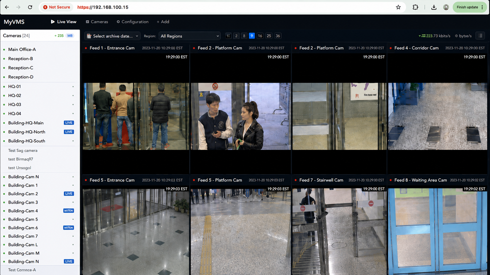
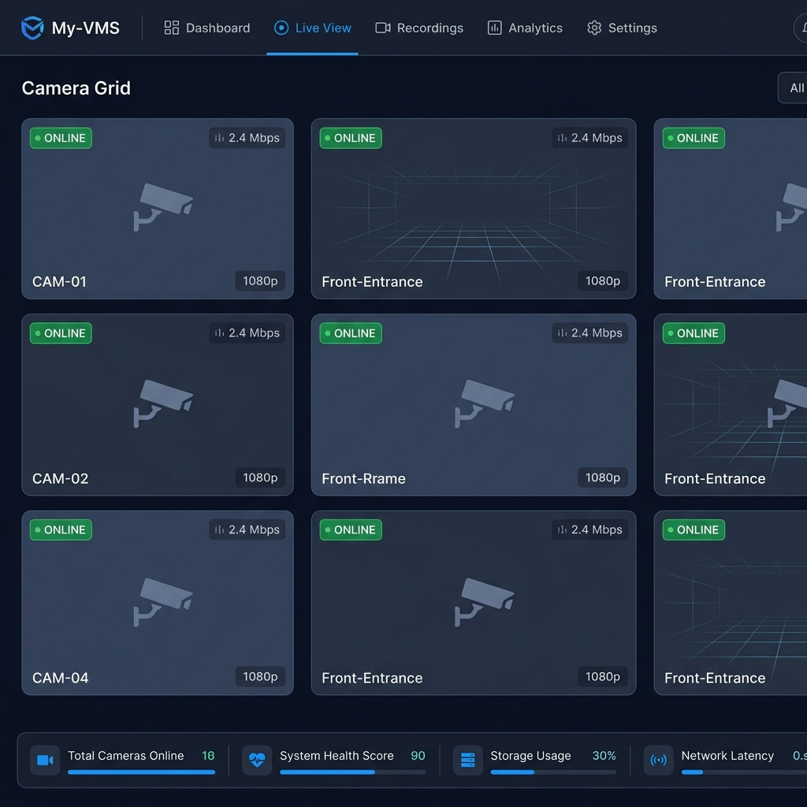
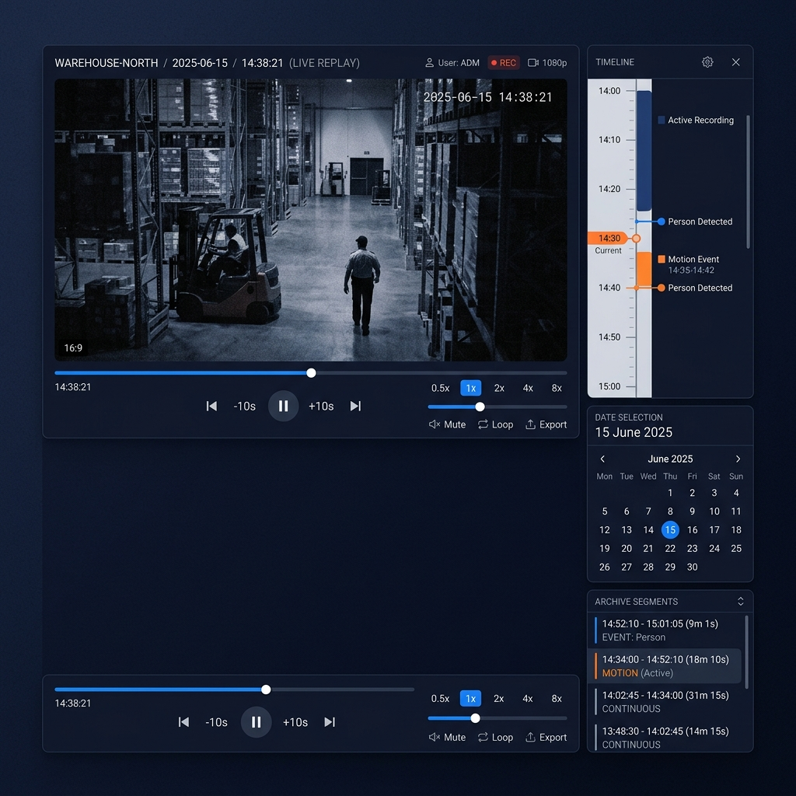
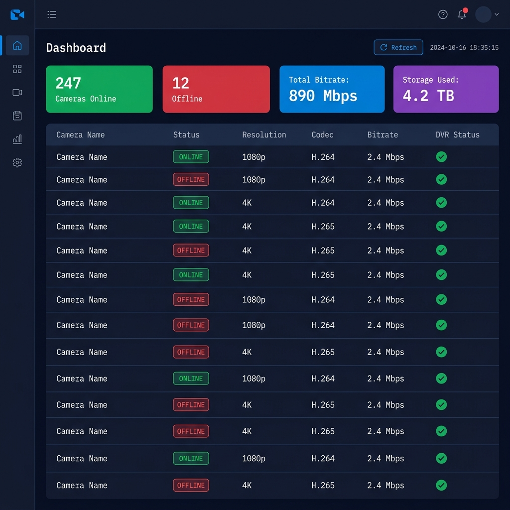

Live monitoring, DVR archive playback, PTZ control, ONVIF discovery, and fleet health monitoring — all from one platform. Optional computer vision analytics can be integrated on customer request for human, vehicle, and object detection workflows.

GrapheneVision is the computer vision product line of GrapheneLab, a security-oriented engineering organization building secure messenger and cloud systems. My-VMS sits within this ecosystem alongside products for identity verification and AI detection.
Large camera networks create vendor, bandwidth, archive, health-monitoring, and analytics complexity. My-VMS centralizes those workflows in one self-hosted platform with optional AI detection integrations.
RTSP-compatible IP cameras
Distributed, load-balanced stream distribution
Secure access from any modern browser, anywhere
Full data sovereignty. Deploy on your own Linux infrastructure — your data never leaves your network.
Add media server instances as your camera fleet grows, with camera streams spread across the available servers.
No proprietary client software required. Operators work from Chrome, Firefox, or Edge.
Nine purpose-built modules, tightly integrated into a single coherent platform.
Configurable grid supporting 1 to N cameras simultaneously. Drag-and-drop tile rearrangement, fullscreen per-camera mode, and visual online/offline status badges. Sub-2-second glass-to-glass latency via HTTP-FLV and HLS.
Continuous MP4 recording auto-segmented into 10-minute chunks, date-organized by
/YYYY/MM/DD/HH/. Instant timestamp search, seamless dual-buffer cross-segment
playback, and multi-speed controls at 0.5×, 1×, 2×, 4×.
Auto-detects manufacturer on first use. Full pan, tilt, zoom with adjustable speed. Preset management: save, list, and recall. Supports Hikvision, Dahua, Axis, and Hanwha/Samsung natively.
Auto-discover cameras on the local network, pull manufacturer and model metadata, and retrieve RTSP stream URLs — all via standard ONVIF protocol. Bulk credential management for fleet-wide configuration.
Full hierarchy management: Region → District → Group → Camera. Per-camera detail view with live feed, archive, and configuration tabs. Start/stop stream ingestion on demand.
30-second telemetry polling delivers per-camera metrics: bitrate, resolution, codec, and DVR write status. Fleet-wide dashboard shows real-time online/offline counts across your entire deployment.
WHEP (WebRTC-HTTP Egress Protocol) proxy delivers ultra-low-latency browser playback — measured in milliseconds, not seconds. Ideal for real-time PTZ monitoring and incident response.
Background scanner reconciles filesystem MP4 files with database records. Automatically recovers orphaned recordings after server restarts or crashes — no manual intervention required.
Designed to support optional computer vision analytics for customer-specific workflows, including human, vehicle, and object detection. Detection events can support alerts, overlays, and searchable metadata.
Your entire camera network, on one screen. Laid out exactly how your operators need it.


Find historical footage by timestamp, review incidents smoothly, and move through archived segments without file browsing.
/YYYY/MM/DD/HH/ for predictable retrieval..mp4.tmp growing files) without waiting for segment completion.One interface for supported PTZ camera manufacturers. Zero manual driver configuration.
My-VMS broadcasts ONVIF discovery probe to your camera subnet.
Camera manufacturer, model name, and RTSP stream URL retrieved automatically.
Apply credentials and stream settings across your entire discovered fleet in one action.
Manufacturer fingerprinted on first PTZ interaction — no manual driver selection ever.
Real-time telemetry across every camera, updated every 30 seconds. No surprises during incidents.

Open, auditable, and deployable on your own infrastructure — no black boxes, no vendor lock-in.
Operator interface for live monitoring, archive playback, PTZ control, and fleet health workflows from a modern browser.
Go service for camera management, PTZ proxying, archive search, health polling, and ONVIF discovery workflows.
PostgreSQL stores the camera hierarchy, ONVIF configuration, and searchable recording metadata used for timestamp-based archive lookup.
FFmpeg ingests compatible RTSP camera streams and feeds the media pipeline for live delivery and DVR recording.
Live and archive streams are delivered through browser-friendly protocols for different latency and reliability needs.
Runs on Linux infrastructure with PostgreSQL, FFmpeg, network-mounted storage, and layer-2 access to the camera subnet.
My-VMS serves any organization managing large, distributed camera networks that demand reliability and operator accountability.
Manage hundreds of traffic, street, and public safety cameras across districts from a single control room. ONVIF auto-discovery scales fleet management without manual provisioning.
24/7 recording across loading docks, storage aisles, and perimeter cameras. Instant archive search for incident investigation with multi-speed playback for rapid review.
Centralized monitoring of multi-store camera networks. Operator teams review footage across dozens of locations without vendor-specific client software for each store system.
Secure access control and lobby monitoring integrated with PTZ cameras on every floor. Stream health dashboard ensures security teams are never flying blind.
Unified monitoring across classrooms, hallways, parking lots, and campus perimeters. DVR recording supports incident reconstruction and safety audits.
High-camera-density environments like factories, power plants, and refineries demand stream reliability and archive accuracy. My-VMS scales to hundreds of concurrent feeds.
Everything you need to evaluate My-VMS for your organization.
My-VMS is designed to scale horizontally. Camera streams can be distributed across multiple media server instances, so capacity can grow with the camera fleet through configuration. Deployments with 100+ concurrent streams are supported.
RTSP-compatible camera streams can be ingested by My-VMS. PTZ control supports Hikvision (ISAPI), Dahua (CGI), Axis (VAPIX), and Hanwha/Samsung (SunAPI) natively, with automatic vendor detection on first PTZ use. ONVIF-compatible cameras can be auto-discovered and configured without manual provisioning.
My-VMS is 100% self-hosted. All video recordings are stored as MP4 files on your own Linux server's filesystem or network-mounted storage. No data is sent to any cloud service. You retain full data sovereignty and can apply your own retention and encryption policies.
None. My-VMS is entirely browser-based. Operators access the dashboard through Chrome, Firefox, or Edge with zero installation required. The React 18 frontend handles live streaming, archive playback, PTZ control, and fleet monitoring natively in the browser using HLS.js, FLV.js, and the WebRTC API.
Yes. Recordings are indexed for fast timestamp search. Enter a camera and time, and My-VMS resolves the matching 10-minute segment for playback. Footage retention is limited only by your storage capacity. Operators can also play at 4× speed to review long time windows rapidly.
My-VMS includes a background Disk Synchronization scanner that reconciles filesystem MP4 files with the database on startup. Any orphaned recordings created before a crash are automatically discovered, registered in the database, and made available for playback. No manual intervention is required.
Yes. My-VMS can be extended with optional computer vision analytics for customer-specific use cases such as human, vehicle, and object detection. Detection events can be integrated into alerts, overlays, and searchable archive metadata depending on the deployment.
My-VMS consolidates your entire camera fleet — from live monitoring to archive search — into a single, self-hosted, browser-based platform. Built for operators who need reliability, not complexity.